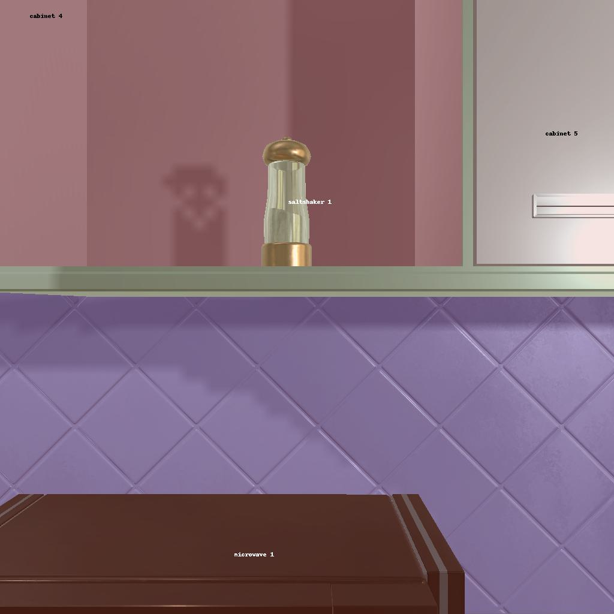

---------------------------------------------------------task: 21---------------------------------------------------------
--------------------------------------------------------------------------------------------------------------------------------------------------------------------
--------------------------------------------------------------------------------------------------------------------------------------------------------------------
Step:--------------------------------------------------------------------------3-------------------------------------------------------------------------------
----------------------------------------
VLM Prompt:
Image1:
Image2:
**Instruction**
1. Analyze the provided image to identify all visible household objects, focusing on those relevant to the task description "put a hot cup in countertop."
2. Use the analysis of the image and the task hint "The agent must find an object of the desired type, pick it up, go to a microwave, heat the object with the microwave, then find the correct location to place it, and put it down there. The agent does not need to use the microwave button or open the microwave to heat the object, and the agent just needs to do action that is "heat the object with the microwave"." to answer the question: what is the most reasonable action in the choices for the task description "put a hot cup in countertop"?
4. Decide and write the answer using the template: The answer is: (i): , where i is the real number. If there is no desired object in the image, search every place based on **Initial Observation** to find the object. And if no one is exactly correct, choose a similar answer.
**Initial Observation**
You are in the middle of a room. Looking quickly around you, you can see cabinet (1-6), microwave (1), countertop (1-2), coffeemachine (1), toaster (1), sink (1), sinkbasin (1), fridge (1)
**Answer Choices**
(1): go to cabinet 2
(2): go to cabinet 3
(3): go to microwave 1
(4): go to cabinet 5
(5): go to cabinet 6
(6): go to countertop 1
(7): go to coffeemachine 1
(8): go to toaster 1
(9): go to countertop 2
(10): go to sink 1
(11): go to sinkbasin 1
(12): go to fridge 1
(13): close cabinet 4
(14): take saltshaker 1 from cabinet 4
(15): examine cabinet 4
**Answer**
Let's think step by step by following the instructions.
----------------------------------------
----------------------------------------
Original Response:
The task is to "put a hot cup in countertop," which implies that there should be a cup that needs to be heated in the microwave and then placed on the countertop. In the provided images, there is no visible cup.
Considering the Initial Observation, the agent must search for a cup in the cabinets as it is the most likely place to find one. Once the agent has the cup, it can proceed to the microwave to heat it and then place it on the countertop.
Checking the answer choices, none of them directly mention taking a cup, but some actions could lead to finding one, such as going to different cabinets. Since we are in the middle of the room and do not know the exact location of the cup, the most reasonable action would be to start searching the cabinets closest to the microwave for efficiency.
Cabinet 4 is open and only contains a saltshaker, and cabinet 5 is closed. Thus, the next reasonable action is to search cabinet 5, which is closest to the microwave.
The answer is: (4): go to cabinet 5.
----------------------------------------
----------------------------------------
>>> Refine Original VLM Response and Get Pure Action: go to cabinet 5
----------------------------------------
-----------------------------------------------------------------
Running time: 9.611083269119263 seconds
Total Money: 10.157320000000006
-----------------------------------------------------------------
-----------------------------------------------------------------
Text Observation:You arrive at loc 5. The cabinet 5 is closed.
-----------------------------------------------------------------
UNSUCCEED